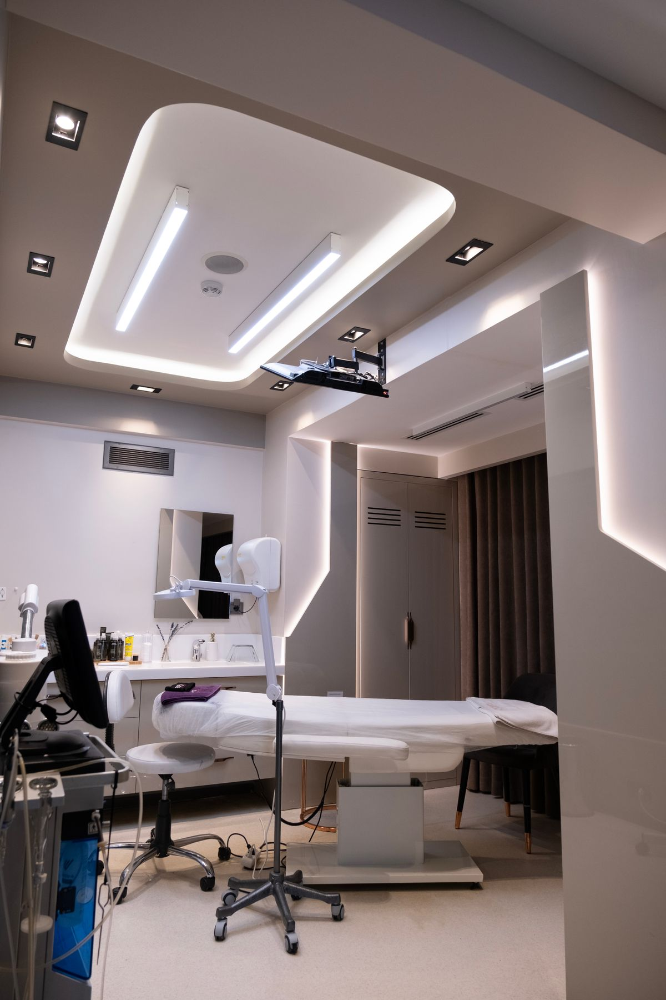
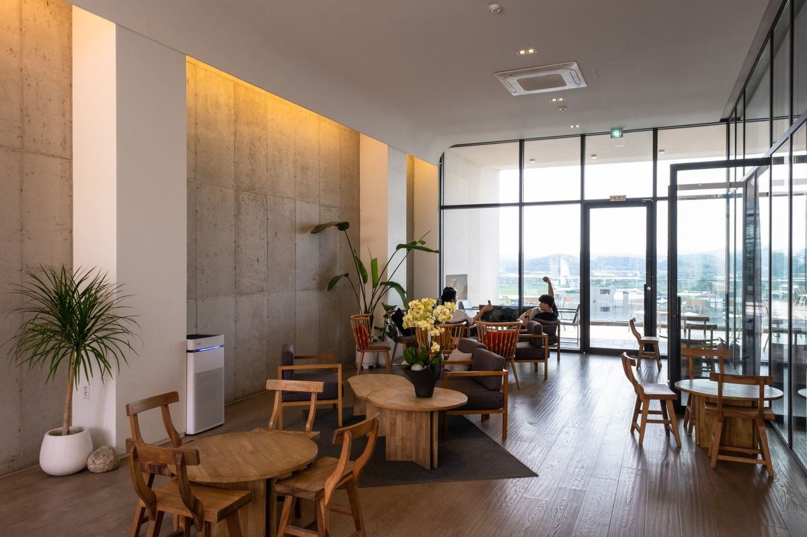
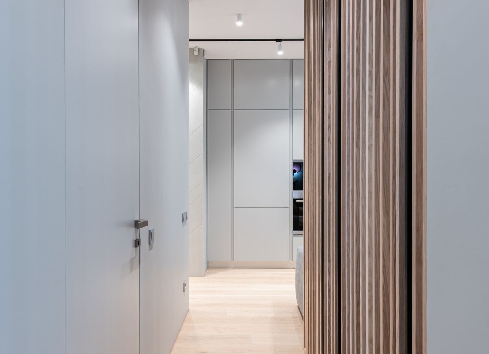

Castelli 429 · Bahía Blanca
Traumatología, ginecología y obstetricia, y cardiología en un mismo consultorio.
3 especialistas, una sola dirección. Pedí tu turno por WhatsApp, teléfono o mail y te confirmamos día y horario.
Staff médico
Cada especialidad, un mismo lugar de confianza.
Los turnos se piden con anticipación. Si tu especialista no atiende ese día, te ofrecemos la fecha más próxima disponible.

Traumatología y Ortopedia
Dr. Alberto Augusto Tulli
Consultas de traumatología y ortopedia para adultos.
Lunes a jueves · 16:00–20:00 hs
Ginecología y Obstetricia
Dr. Héctor Daniel Nardi
Controles ginecológicos y seguimiento de embarazo.
Lun y jue control · Mar estudios · 17:00–20:00 hsCardiología
Dr. Paris
Consultas de cardiología clínica.
Días y horarios a confirmar por teléfono
Cómo trabajamos
Una misma dirección, tres especialidades coordinadas.
No tenemos sucursales ni derivaciones a otro edificio: todo el consultorio funciona en Castelli 429, con contacto directo con cada especialista.
Turnos
Coordiná tu turno
El sistema de turnos 100% online está en desarrollo. Hoy, la vía más rápida es escribirnos por WhatsApp.
Escribinos por WhatsApp291 566-8485 · respondemos en el horario del consultorioMuy pronto vas a poder hacer esto vos mismo, online:
Solicitar
Elegís especialista, día y horario disponible.
Consultar
Revisás los datos de tu turno con tu DNI.
Cancelar
Liberás el horario si finalmente no podés asistir.
Instalaciones
Un espacio pensado para que la espera sea simple.
Recepción, sala de espera y consultorios equipados para cada especialidad.
Imágenes ilustrativas — fotos reales de nuestro consultorio, próximamente.
Cómo llegar
Castelli 429, Bahía Blanca
Términos y condiciones
Antes de pedir tu turno
Uso del sitio
La información publicada tiene fines informativos y no reemplaza una consulta médica. Al usar este sitio, aceptás que los datos de contacto y horarios pueden actualizarse sin aviso previo.
Turnos y cancelaciones
Te pedimos avisar con la mayor anticipación posible si no podés asistir a un turno, para poder ofrecer ese horario a otro paciente. Las ausencias reiteradas sin aviso pueden afectar la asignación de próximos turnos.
Privacidad de tus datos
Los datos que nos compartís para coordinar un turno (nombre, DNI, teléfono, mail) se usan únicamente para la gestión de la atención médica y no se comparten con terceros.